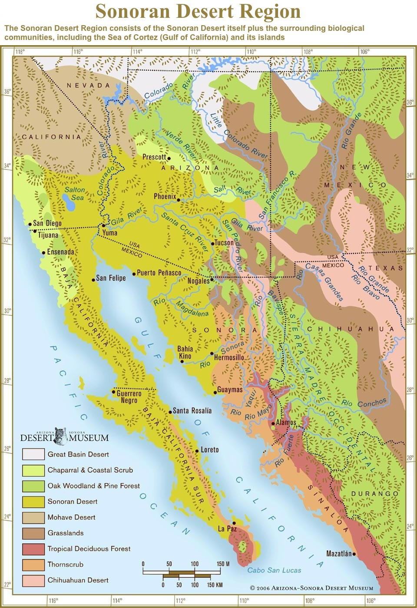
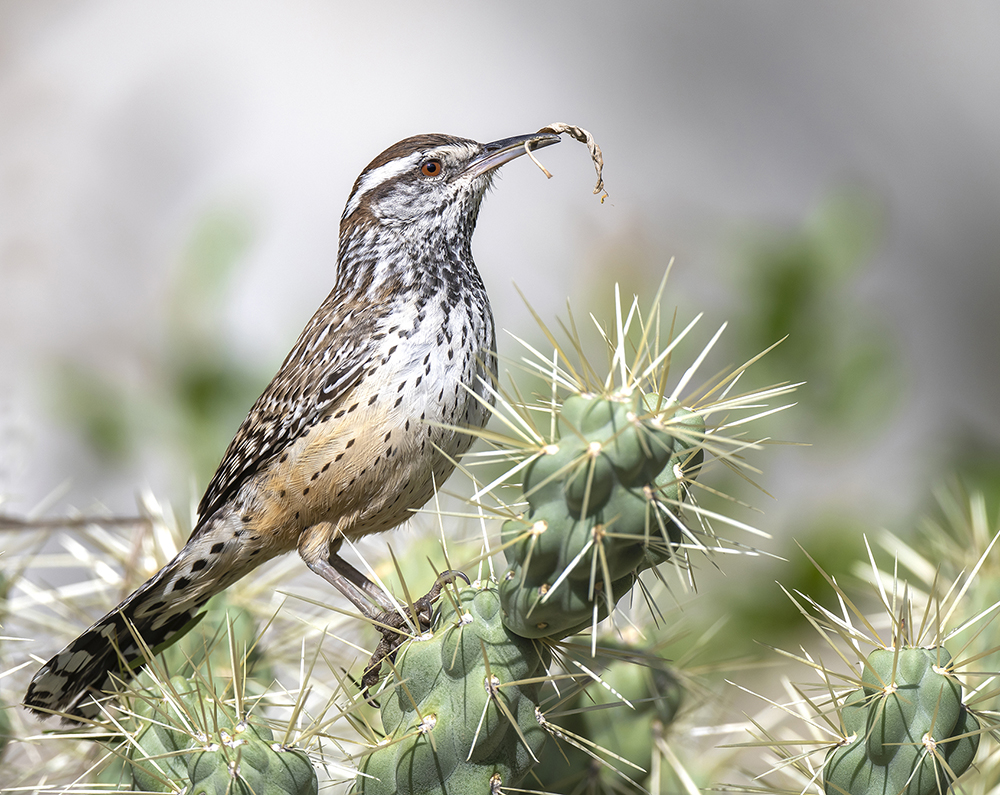
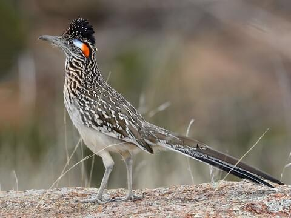
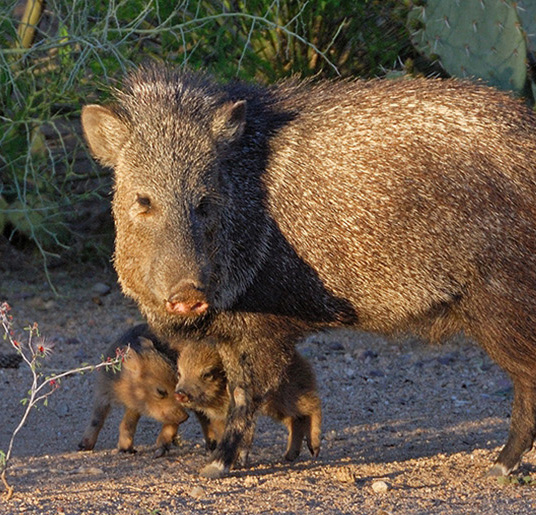
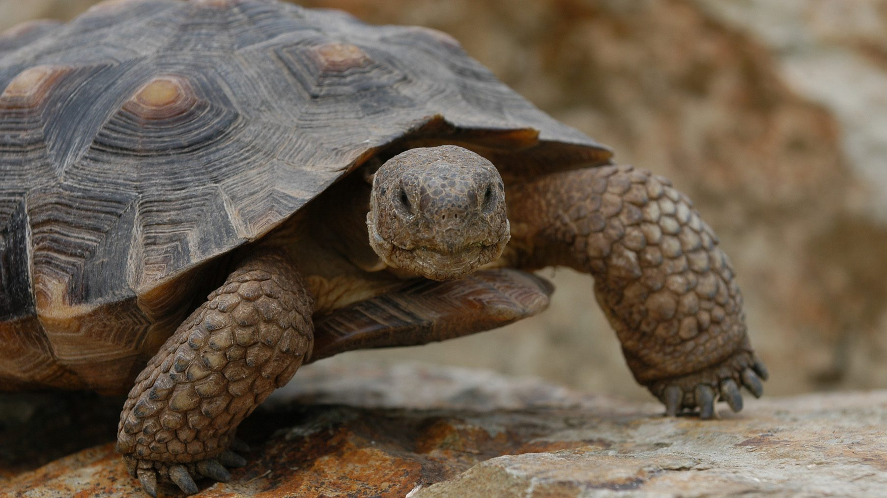
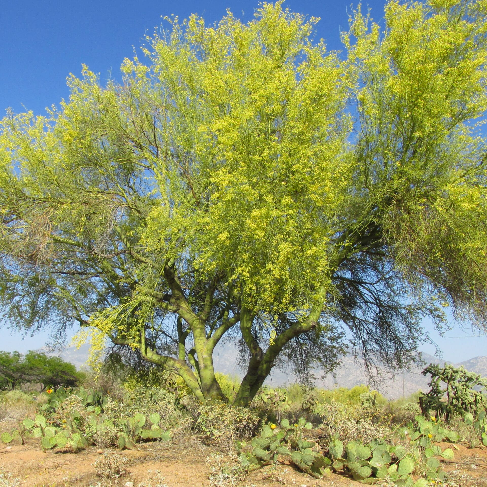
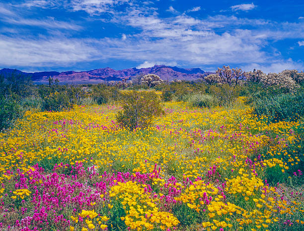
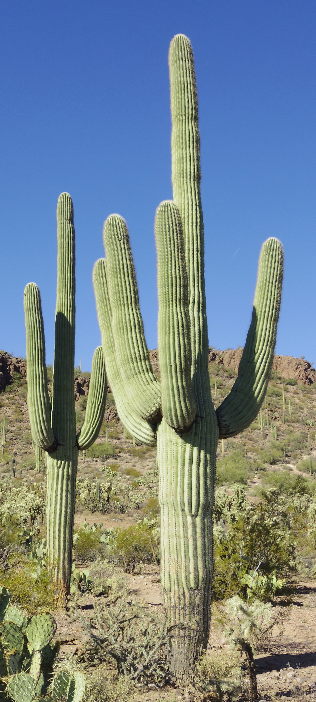

Geography
The Sonoran Desert is one of the most unique and biologically diverse deserts in the world. It stretches across parts of the Arizona and California in the United States and extends into Mexico, including the states of Sonora and Baja California. Unlike many deserts, the Sonoran Desert contains a wide variety of landscapes, including mountain ranges, valleys, rocky hills, sandy plains, and even coastal areas along the Gulf of California. This geographic diversity helps support an unusually large variety of plant and animal species.

Animal Life
Animal life in the Sonoran Desert is remarkably diverse. Species such as the coyote, javelina, Gila monster, and roadrunner have adapted to survive in extreme heat and limited water conditions. Many animals are nocturnal, meaning they are most active at night when temperatures are cooler. Reptiles, birds, mammals, and insects all play important roles in the desert ecosystem.
Key Animal Groups in the Sonoran Desert
- Mammals
- Coyote
- Javelina
- Mule Deer
- Birds
- Greater Roadrunner
- Red-tailed Hawk
- Turkey Vulture
- Reptiles
- Desert Tortoise
- Diamondback Rattlesnake
- Gila Monster

Cactus Wren - The state bird of Arizona

Greater Roadrunner

Javelina or Collared Peccary

Desert Tortoise
Climate
The climate of the Sonoran Desert is characterized by hot summers, mild winters, and low annual rainfall. However, it is one of the wettest deserts in North America because it experiences two rainy seasons—winter storms and summer monsoons. Summer temperatures often exceed 100°F (38°C), while winter temperatures are generally comfortable and rarely drop below freezing. These seasonal rains create short bursts of plant growth and bring the desert to life, especially during spring wildflower blooms.
Plant Life
One of the most iconic features of the Sonoran Desert is the saguaro cactus, which can grow over 40 feet tall and live for more than 150 years. These cacti provide food and shelter for many desert animals. Other common plants include creosote bush, palo verde trees, and prickly pear cactus. Together, these plants and animals create a rich ecosystem that is far more vibrant and complex than many people expect from a desert environment.

Palo Verde

Desert Wildflowers

Creosote Bush

The Saguaro cactus — a defining symbol of the Sonoran Desert, capable of living over 150 years.